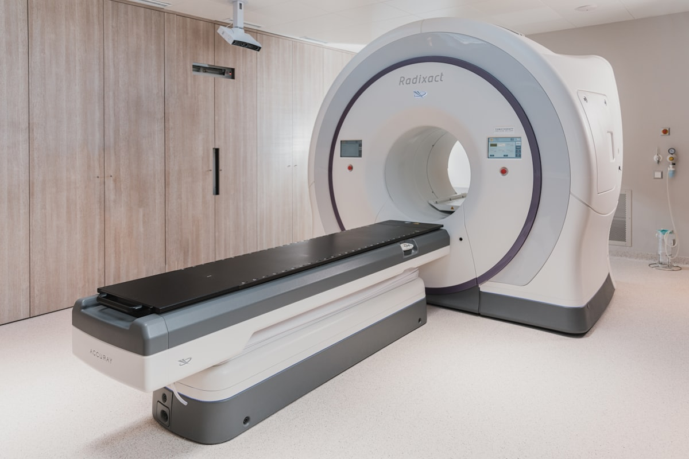

01
IRM
L'imagerie par résonance magnétique offre une analyse détaillée des tissus mous, du cerveau, de la moelle épinière, des articulations et des organes abdominaux. Examen sans rayonnement ionisant.
Équipement : Siemens MAGNETOM Aera 1.5T — imagerie haute résolution, confort patient optimisé.
Durée20–45 min
PréparationJeûne possible si injection
RésultatsCompte-rendu le jour même
RayonnementAucun